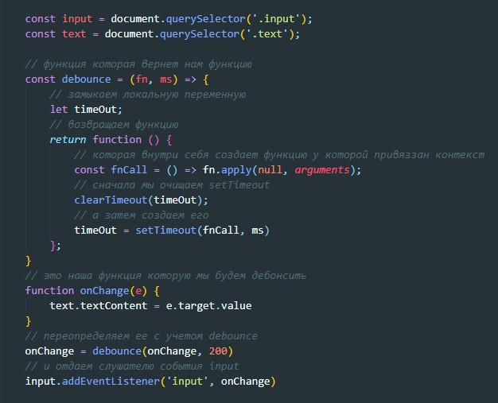

Debounce функции - означает, что все вызовы будут игнорироваться до тех пор, пока они не прекратятся на определённый период времени. Только после этого функция будет вызвана. Например, если мы установим таймер на 2 секунды, а функция вызывается 10 раз с интервалом в одну секунду, то фактический вызов произойдёт только спустя 2 секунды после крайнего (десятого) обращения к функции.
пример
разьяснение
Что здесь произошло? Идем сверху вниз. Функция debounce нам вернула функцию, допустим мы ее вызвали (начали вводить текст в поле input), создалась переменная timeOut, затем создалась функция fnCall, после этого очистится clearTimeout (clearTimeout от undefined вернет нам ничего, т.е. ничего страшного) после этого в нашу замкнутую timeOut запишется setTimeout который запустит нашу функцию через какое-то количество времени. Что происходит далее. Мы продолжжаем вводить текст и наша функция фызовется еще раз и здесь так же читаем сверху вниз. Сначала создастся функция fnCall, затем очистится clearTimeout (timeOut у нас в замыкании а это значит что обращение быдет к той же переменной). Значит тот timeOut = setTimeout(fnCall, ms) который мы определили в предыдущий раз не успеет выполниться, вместо него будет создан новый и он так же будет вызван только если пользователь прекратит вводить текст, иначе каждый раз setTimeout(fnCall, ms) будет очищаться до того как будет вызван.